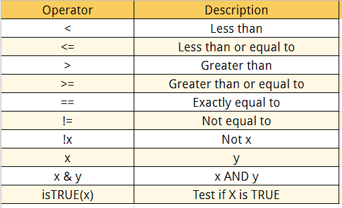

Tiderverse Descriptive Statistics and Data Wrangling
Filtering and Selecting Data
In the following coding examples, you will see three important functions, a pipe, select(), and filter(). First, a pipe is written as a %>% or |>. Pipes are a powerful tool that help us clearly expressing a sequence of functions. Pipes tell R that you want to use a designated set for a chain of functions that build off of each other. A way to think about is in math terms.
$$
\[ F(G(H(X))), X=Data\]
$$
In this series of functions, the first step is you solve \(H(X)\), then using that solution you solve \(G()\), then after you solve \(F()\). The final output is the solution of those chain of events with the information of \(X\). This is how pipes work! Pipes use a set of information, typically a data frame, and then apply it to a series of functions that build off each other.

In the following example, I use the select() and filter() to simplify the data. The select() allows me to select certain variables from the data and eliminate the rest. filter() does something similar but instead of variables, it allows me to simplify the data based on values based on a set of programmed logical operators. In my first example, I select for the circuit, year, constructor, surname of the driver, and the number of points awarded during that race. I use the unique() to remove duplicates, and then I filter for the race information for the constructor McLaren during the 2023 season.
library(tidyverse)
── Attaching core tidyverse packages ──────────────────────── tidyverse 2.0.0 ──
✔ dplyr 1.1.4 ✔ readr 2.1.5
✔ forcats 1.0.0 ✔ stringr 1.5.1
✔ ggplot2 3.5.2 ✔ tibble 3.2.1
✔ lubridate 1.9.3 ✔ tidyr 1.3.1
✔ purrr 1.0.4
── Conflicts ────────────────────────────────────────── tidyverse_conflicts() ──
✖ dplyr::filter() masks stats::filter()
✖ dplyr::lag() masks stats::lag()
ℹ Use the conflicted package (<http://conflicted.r-lib.org/>) to force all conflicts to become errors
# A tibble: 40 × 5
circuit year constructor surname points
<chr> <dbl> <chr> <chr> <dbl>
1 Bahrain International Circuit 2023 McLaren Norris 0
2 Jeddah Corniche Circuit 2023 McLaren Norris 0
3 Jeddah Corniche Circuit 2023 McLaren Piastri 0
4 Albert Park Grand Prix Circuit 2023 McLaren Norris 8
5 Albert Park Grand Prix Circuit 2023 McLaren Piastri 4
6 Baku City Circuit 2023 McLaren Norris 2
7 Baku City Circuit 2023 McLaren Piastri 0
8 Miami International Autodrome 2023 McLaren Norris 0
9 Miami International Autodrome 2023 McLaren Piastri 0
10 Circuit de Monaco 2023 McLaren Norris 2
# ℹ 30 more rows
What if we wanted two different constructors? Then we want to use the logical operator for | and also differentiate it from the next instruction for filter by using a , or (). In the example bellow, I filter for the race information for the constructor Mercades and Red Bull during the 2021 season.
# A tibble: 40 × 5
circuit year constructor surname points
<chr> <dbl> <chr> <chr> <dbl>
1 Losail International Circuit 2021 Red Bull Pérez 12
2 Losail International Circuit 2021 Red Bull Verstappen 19
3 Bahrain International Circuit 2021 Red Bull Pérez 10
4 Bahrain International Circuit 2021 Red Bull Verstappen 18
5 Autodromo Enzo e Dino Ferrari 2021 Red Bull Pérez 0
6 Autodromo Enzo e Dino Ferrari 2021 Red Bull Verstappen 25
7 Autódromo Internacional do Algarve 2021 Red Bull Pérez 12
8 Autódromo Internacional do Algarve 2021 Red Bull Verstappen 18
9 Circuit de Barcelona-Catalunya 2021 Red Bull Pérez 10
10 Circuit de Barcelona-Catalunya 2021 Red Bull Verstappen 19
# ℹ 30 more rows
However, if we wanted to use the modified data, we could not because it is not saved. If we want to use this data we need to save it as a new object!
# A tibble: 40 × 5
circuit year constructor surname points
<chr> <dbl> <chr> <chr> <dbl>
1 Losail International Circuit 2021 Red Bull Pérez 12
2 Losail International Circuit 2021 Red Bull Verstappen 19
3 Bahrain International Circuit 2021 Red Bull Pérez 10
4 Bahrain International Circuit 2021 Red Bull Verstappen 18
5 Autodromo Enzo e Dino Ferrari 2021 Red Bull Pérez 0
6 Autodromo Enzo e Dino Ferrari 2021 Red Bull Verstappen 25
7 Autódromo Internacional do Algarve 2021 Red Bull Pérez 12
8 Autódromo Internacional do Algarve 2021 Red Bull Verstappen 18
9 Circuit de Barcelona-Catalunya 2021 Red Bull Pérez 10
10 Circuit de Barcelona-Catalunya 2021 Red Bull Verstappen 19
# ℹ 30 more rows
Now, we can use this information!
Creating New Variables
We can also add to our data sets! If we want to make a new variable, we can use the mutate(), which uses existing data to create new variables. The correct format of the function is the following, first is the new variable name and then an equal sign =, followed by how the new variable will be formed and what existing variables are used to make it.
# A tibble: 40 × 5
circuit year constructor surname avg_laptime
<chr> <dbl> <chr> <chr> <dbl>
1 Bahrain International Circuit 2023 McLaren Norris 646286.
2 Jeddah Corniche Circuit 2023 McLaren Norris 710915.
3 Jeddah Corniche Circuit 2023 McLaren Piastri 710915.
4 Albert Park Grand Prix Circuit 2023 McLaren Norris 612858.
5 Albert Park Grand Prix Circuit 2023 McLaren Piastri 612858.
6 Baku City Circuit 2023 McLaren Norris 696975.
7 Baku City Circuit 2023 McLaren Piastri 696975.
8 Miami International Autodrome 2023 McLaren Norris 623609.
9 Miami International Autodrome 2023 McLaren Piastri 634745.
10 Circuit de Monaco 2023 McLaren Norris 461633.
# ℹ 30 more rows
If we wanted to make a new character variable we would use the case_when() in the mutate() function. In this example, I make a new variable based on the final position of the race for the two McLaren drivers, Piastri and Norris, in the 2023 season. I use the existing variables the circuit and surname to make this new variable.
McLarenStandings_2023 <- race_stats |>select(circuit, year, constructor, surname) |># remove duplicatesunique() |>filter(constructor =="McLaren"& year ==2023) |>mutate(final_position =case_when(#PIASTRI circuit =="Bahrain International Circuit"& surname =="Piastri"~"DNF", circuit =="Jeddah Corniche Circuit"& surname =="Piastri"~"15", circuit =="Albert Park Grand Prix Circuit"& surname =="Piastri"~"8", circuit =="Baku City Circuit"& surname =="Piastri"~"11", circuit =="Miami International Autodrome"& surname =="Piastri"~"19", circuit =="Circuit de Monaco"& surname =="Piastri"~"10", circuit =="Circuit de Barcelona-Catalunya"& surname =="Piastri"~"13", circuit =="Circuit Gilles Villeneuve"& surname =="Piastri"~"11", circuit =="Red Bull Ring"& surname =="Piastri"~"16", circuit =="Silverstone Circuit"& surname =="Piastri"~"4", circuit =="Hungaroring"& surname =="Piastri"~"5", circuit =="Circuit de Spa-Francorchamps"& surname =="Piastri"~"DNF", circuit =="Circuit Park Zandvoort"& surname =="Piastri"~"9", circuit =="Autodromo Nazionale di Monza"& surname =="Piastri"~"12", circuit =="Marina Bay Street Circuit"& surname =="Piastri"~"7", circuit =="Suzuka Circuit"& surname =="Piastri"~"3", circuit =="Losail International Circuit"& surname =="Piastri"~"2", circuit =="Circuit of the Americas"& surname =="Piastri"~"DNF", circuit =="Autódromo Hermanos Rodríguez"& surname =="Piastri"~"8", circuit =="Autódromo José Carlos Pace"~"14", circuit =="Las Vegas Strip Street Circuit"& surname =="Piastri"~"10", circuit =="Yas Marina Circuit"& surname =="Piastri"~"6",# NORRIS circuit =="Bahrain International Circuit"& surname =="Norris"~"17", circuit =="Jeddah Corniche Circuit"& surname =="Norris"~"17", circuit =="Albert Park Grand Prix Circuit"& surname =="Norris"~"6", circuit =="Baku City Circuit"& surname =="Norris"~"9", circuit =="Miami International Autodrome"& surname =="Norris"~"17", circuit =="Circuit de Monaco"& surname =="Norris"~"9", circuit =="Circuit de Barcelona-Catalunya"& surname =="Norris"~"17", circuit =="Circuit Gilles Villeneuve"& surname =="Norris"~"13", circuit =="Red Bull Ring"& surname =="Norris"~"4", circuit =="Silverstone Circuit"& surname =="Norris"~"2", circuit =="Hungaroring"& surname =="Norris"~"2", circuit =="Circuit de Spa-Francorchamps"& surname =="Norris"~"7", circuit =="Circuit Park Zandvoort"& surname =="Norris"~"9", circuit =="Autodromo Nazionale di Monza"& surname =="Norris"~"8", circuit =="Marina Bay Street Circuit"& surname =="Norris"~"2", circuit =="Suzuka Circuit"& surname =="Norris"~"2", circuit =="Losail International Circuit"& surname =="Norris"~"3", circuit =="Circuit of the Americas"& surname =="Norris"~"3", circuit =="Autódromo Hermanos Rodríguez"& surname =="Norris"~"5", circuit =="Autódromo José Carlos Pace"~"2", circuit =="Las Vegas Strip Street Circuit"& surname =="Norris"~"DNF", circuit =="Yas Marina Circuit"& surname =="Norris"~"5" ) ) print(McLarenStandings_2023)
# A tibble: 40 × 5
circuit year constructor surname final_position
<chr> <dbl> <chr> <chr> <chr>
1 Bahrain International Circuit 2023 McLaren Norris 17
2 Jeddah Corniche Circuit 2023 McLaren Norris 17
3 Jeddah Corniche Circuit 2023 McLaren Piastri 15
4 Albert Park Grand Prix Circuit 2023 McLaren Norris 6
5 Albert Park Grand Prix Circuit 2023 McLaren Piastri 8
6 Baku City Circuit 2023 McLaren Norris 9
7 Baku City Circuit 2023 McLaren Piastri 11
8 Miami International Autodrome 2023 McLaren Norris 17
9 Miami International Autodrome 2023 McLaren Piastri 19
10 Circuit de Monaco 2023 McLaren Norris 9
# ℹ 30 more rows
Descriptive Statistics Using Tidyverse
Now that we know some basic ways to manipulate the data frame, lets look at different way to do basic descriptive statistics! In this section we will be using the function, summarize(). This function is similar to the mutate function, except instead of adding a variable, it makes a new data frame based on existing variables. You will also see the function group_by(). This function allows us to organize the data by telling it to group things by a variable(s). Essentially, the functions splits things into groups.
For this example we are going to find the total points for each team in the 2023 season!
# A tibble: 10 × 2
constructor total_points
<chr> <dbl>
1 Alfa Romeo 16
2 AlphaTauri 22
3 Alpine F1 Team 110
4 Aston Martin 266
5 Ferrari 363
6 Haas F1 Team 9
7 McLaren 266
8 Mercedes 374
9 Red Bull 790
10 Williams 26
# A tibble: 10 × 2
constructor total_points
<chr> <dbl>
1 Red Bull 790
2 Mercedes 374
3 Ferrari 363
4 Aston Martin 266
5 McLaren 266
6 Alpine F1 Team 110
7 Williams 26
8 AlphaTauri 22
9 Alfa Romeo 16
10 Haas F1 Team 9
What if we wanted to know the percentage of points each driver contributed to the teams total?
TeamStandings_2023 <- race_stats |>select(circuit, year, constructor, surname, points) |># remove duplicatesunique() |>filter(year==2023) |>group_by(constructor) |>mutate(total_points =sum(points, na.rm =TRUE)) |>ungroup() |># Ungroup to avoid issues with the next group_bygroup_by(surname) |>summarize(perc_points =sum(points, na.rm =TRUE) /unique(total_points) *100) |>arrange(desc(perc_points))print(TeamStandings_2023)